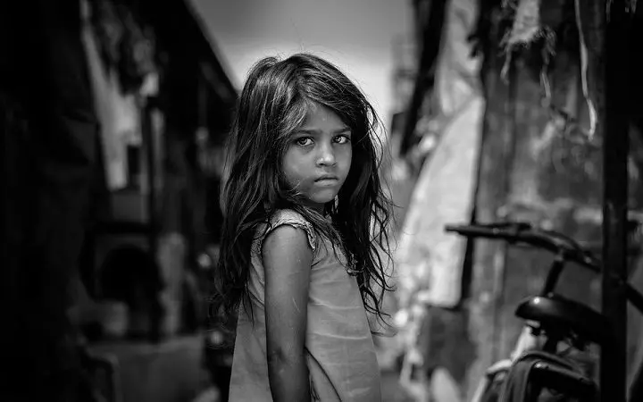
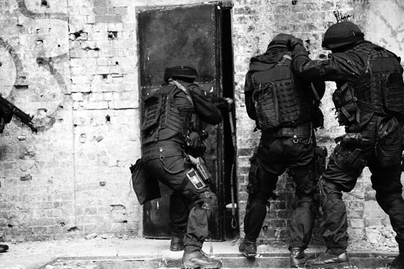
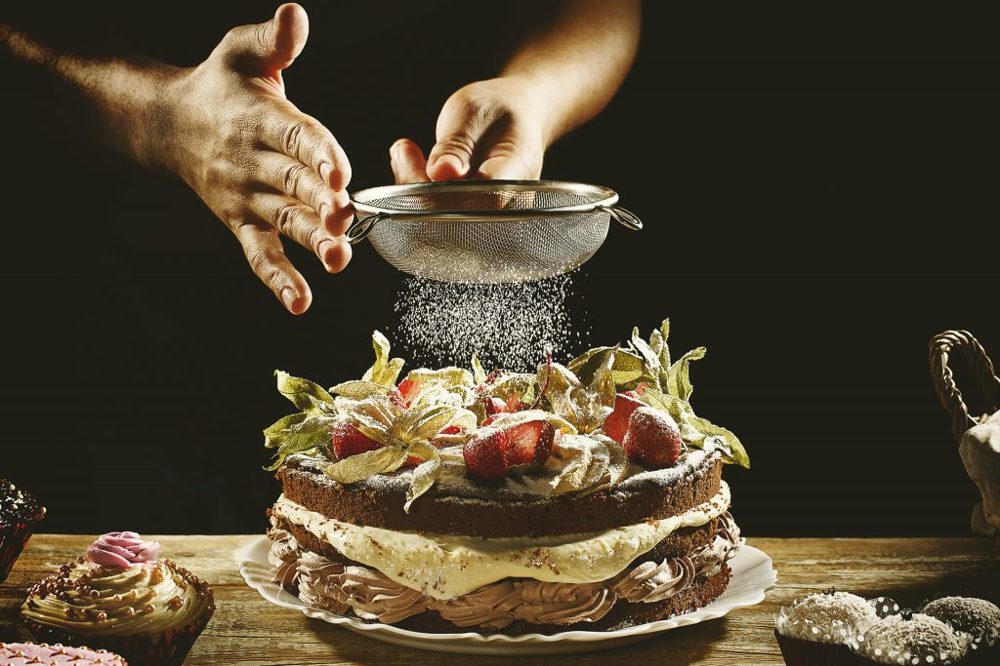

Tipos de Fotografias
Existem inúmeros tipos de fotografias e gêneros e podemos categoriza-los de várias formas. Quando falo em tipos de fotografias é a mesma coisa que enquadrar as fotos em um assunto ou técnica.
Fotografia Retrato

Fotografia Fotojornalismo

Fotografia Publicitária
